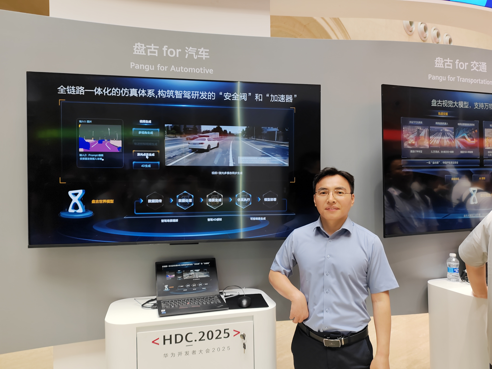
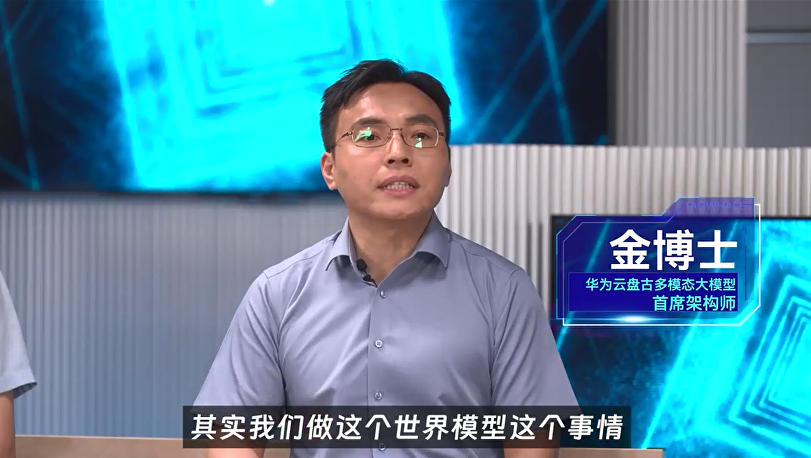
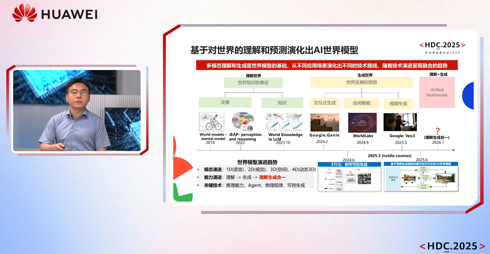

华为云视频生成大模型、世界模型 团队主管金鑫
中国科学院计算技术研究所 博士 | 华为技术有限公司 2012实验室 / 华为云
华为云盘古多模态大模型首席架构师 · 华为技术专家A 金鑫
我是金鑫博士，2015年毕业于中国科学院计算技术研究所（计算机软件与理论方向），同年加入华为技术有限公司，先后任职于2012实验室与华为云。
目前专注于大模型、人工智能与云计算领域，负责华为盘古视频生成基础模型、自动驾驶世界模型、具身世界模型、3D大模型、AR/VR、视频分析、OCR、机器学习平台、机器翻译等多个系统和服务。
担任华为集团级大模型项目"4野15纵"视频生成技术负责人、华为集团级天水计划-AIGC视频创意生成项目经理。技术成果于2023、2024、2025连续三年由华为云CEO在HDC/HC大会Keynote重磅发布。



在 IEEE Transactions、ICLR、CVPR、AAAI、IROS、ICDM、CIKM 等顶级期刊和国际会议发表论文 20篇，涵盖多模态大模型、计算机视觉、机器人与智能系统等领域。
申请美国、欧洲、中国专利 60+项，其中已授权美国专利 8项。涉及视频生成、世界模型、3D重建、OCR、视觉搜索等核心技术。